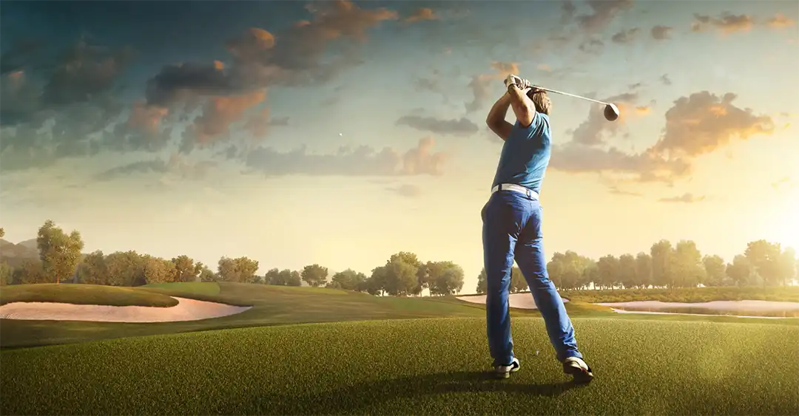

Vår Vision
Vi vill vara mer än en golfklubb, vi vill vara en levande mötesplats där tradition och framtid går hand i hand. Vår vision är att skapa en klubb där varje medlem, oavsett ålder eller erfarenhet, känner sig välkommen, sedd och delaktig.
Golfen är kärnan i vår verksamhet, men klubben ska också vara en plats för gemenskap, vänskap och inspiration. Här bygger vi på den stolta historien från tidigt 1900-tal och utvecklar den vidare med nya idéer, modern teknik och hållbara lösningar.
Vi vill att banan alltid ska hålla högsta kvalitet, så att varje runda blir en upplevelse att minnas. Samtidigt ser vi klubben som ett hem för både tävlingsspelare och motionärer, en plats där man kan växa i sitt spel, utmana sig själv och samtidigt känna gemenskapen med andra.
Framtiden för oss handlar inte bara om golf, den handlar om att skapa en klubbkultur där människor möts, delar passioner och bygger minnen tillsammans. Vi vill att vår klubb ska stå stark i generationer framåt, som en symbol för tradition, glädje och gemenskap.
Vår Mål
- För banan:
- Fortsätta utveckla och underhålla en bana av högsta kvalitet.
- Arbeta hållbart för att värna om naturen och miljön runt klubben.
- För medlemmarna:
- Skapa en inkluderande och välkomnande miljö för alla åldrar och nivåer.
- Erbjuda utbildning, träning och stöd för att varje medlem ska kunna utvecklas i sitt spel.
- Bygga gemenskap genom events, tävlingar och sociala aktiviteter.
- För framtiden:
- Satsa på modern teknik och utrustning för att förbättra spelupplevelsen.
- Ständigt växa och attrahera nya medlemmar utan att tappa vår identitet.
- Vara en stark mötesplats i regionen, både för golfen och för vänskapen.